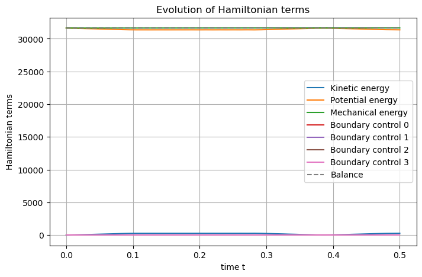

The shallow water equation
file: examples/shallow_water.py
authors: Ghislain Haine
date: 22 nov. 2022
brief: inviscid shallow water equations
- examples.shallow_water.native_triangular_field(filename, field_name)
Return original GetFEM nodes and plotting triangles, native h/p values.
- examples.shallow_water.render_native_shallow_water(system, folder, *, rho=1000.0, max_gif_frames=36)
Render true 2-D h and p/rho from exported VTK, plus physical budgets.
Call on the actual canonical DPHS instance AFTER successful nonlinear_affine/BDF2 simulation, H registration, and native export_to_pv(‘h’)/export_to_pv(‘p’). Only MPI1 is supported for this visual protocol; MPI2 physical parity is a separate audit.
- examples.shallow_water.render_original_shallow_water_spatial_VTU(folder, true_times, *, rho=1000.0, max_gif_frames=36, figures_directory=None, gif_directory=None)
Render ONLY real GetFEM h/p FE fields from complete original VTU.
Used both by the normal canonical example and the standalone recovery of real original VTK files after a successful simulation. The recovery does not invent unavailable FE Hamiltonian quadratures.
- examples.shallow_water.shallow_water_eq(*, factor_solver=None, final_time=0.5, time_step=0.0001, save_step=0.01, showcase=False, showcase_output=None)
A structure-preserving discretization of the inviscid shallow-water equation
Formulation Grad-Grad, homogeneous boundary condition, on a tank.
The executable entry point (python examples/shallow_water.py or python -m examples.shallow_water) enables showcase=True by DEFAULT: it solves the genuine inviscid equations and saves original CG2 h, DG1 p, 3-D height and velocity PNG/GIF, Hamiltonian and mass plots. It uses the separately qualified nonlinear_affine DAE initializer, leaving the PDE, h/p initial data, four zero controls, mesh, FEM, BDF2 and lagged gyro unchanged. Default CLI horizon: t_f=0.12. For historical compatibility, calling shallow_water_eq(showcase=False) or passing –no-showcase on the CLI retains the old pseudo-time initialization and single Hamiltonian / h PVD outputs (t_f=0.5). Visual images do not certify exact BDF2 energy conservation.
- examples.shallow_water.true_pvd_files(root, name, true_times)
Demand exactly one genuine native VTK snapshot for each saved FE t.
- examples.shallow_water.vtk_array(node, *, native_field_size=None)
Read native GetFEM ASCII/inline-binary VTK, validating true byte counts.
The original GetFEM 5.5 field exporter writes an IEEE Float32 count header for PointData (e.g. h: 547 points -> float32(547), p: 744 3-component VTK points from 1488 native 2D scalars -> float32(1488)). The same exporter uses a conventional UInt32 BYTE-count header for Points and Cells. Both encodings are independently verified on the native source-14181a94 archive. Do not silently parse all field headers as UInt32 byte counts.
Setting
The objective of this example is to show how to deal with non-linearity.
Let us consider a bounded domain \(\Omega \subset \mathbb{R}^2\). The shallow water equations are constituted of two conservation laws
where \(h\) is the height of the fluid, \(v\) is the velocity, \(\rho\) is the fluid density (supposed constant), \(p := \rho v\) is the linear momentum, \(\omega := {\rm curl}_{2D} \left( v \right) := \partial_x v_y - \partial_y v_x\) is the vorticity, \(G(\omega):=\rho \begin{bmatrix} 0 & 1 \\ -1 & 0 \end{bmatrix}\,{\omega}\), \(e_h = \frac{1}{2} \rho\,\|v\|^2 + \rho g h\) is the total pressure and \(e_p = h v\) is the volumetric flow of the fluid. Thus, the first line of the matrix equation represents the conservation of the mass (or volume, since the fluid is assumed to be incompressible) and the second represents the conservation of linear momentum.
Port-Hamiltonian framework
One can define the system Hamiltonian (or total energy) as a functional of \(h\) and \(p\), which are thus called energy variables
The co-energy variables can be computed from the variational derivative of the Hamiltonian such that
The time-derivative of the Hamiltonian can then be obtained computed and depends only on the boundary variables
which enables to define collocated control and observation distributed ports along the boundary \(\partial\Omega\). For example, one may define
and the power-balance is given by a product between input and output boundary ports. The system is lossless, and conservative in the absence of control.
Structure-preserving discretization
First, let us multiply the linear momentum conservation equation by \(h\).
Let us consider sufficiently regular test functions \(\varphi\) and \(\Phi\) on \(\Omega\), and \(\psi\) test functions at the boundary \(\partial\Omega\). The weak form of the previous equations reads
Applying integration by parts on the first line leads to
Furthermore, the weak form of the constitutive relations write
Now, let us choose three finite families \((\varphi^i)_{1 \le i \le N_h} \subset H^1(\Omega)\), \((\Phi^k)_{1 \le k \le N_p} \subset (L^2(\Omega))^2\) and \((\psi^m)_{1 \le m \le N_\partial}\) and project the weak formulations on them: for all \(1 \le i \le N_h\), all \(1 \le k \le N_p\) and all \(1 \le m \le N_\partial\)
where \(h^d := \sum_{i=1}^{N_h} h^i \varphi^i\) is the approximation of \(h\) and \(p^d := \sum_{k=1}^{N_p} p^k \Phi^k\) is the approximation of \(p\). The constitutive relations read for all \(1 \le i \le N_h\) and all \(1 \le k \le N_p\)
Defining \(\underline{\star}\) the vector gathering the coefficient of the approximation of the variable \(\star\) in its appropriate finite family, one may write the discrete weak formulations in matrix notation
where the matrices are given by
and
The constitutive relations read
where the matrices are given by
With these definition, one may prove the discrete power balance
Simulation
The beggining is classical: first import, then create the dphs and set the domain.
# Import scrimp
import scrimp as S
# Init the distributed port-Hamiltonian system
swe = S.DPHS("real")
# Set the domain (using the built-in geometry `Rectangle`)
# Labels: Omega = 1, Gamma_Bottom = 10, Gamma_Right = 11, Gamma_Top = 12, Gamma_Left = 13
swe.set_domain(S.Domain("Rectangle", {"L": 2.0, "l": 0.5, "h": 0.1}))
Then the states and co-states.
# Define the states and costates
states = [
S.State("h", "Fluid height", "scalar-field"),
S.State("p", "Linear momentum", "vector-field"),
]
costates = [
S.CoState("e_h", "Pressure", states[0]),
S.CoState("e_p", "Velocity", states[1]),
]
# Add them to the dphs
for state in states:
swe.add_state(state)
for costate in costates:
swe.add_costate(costate)
And the control ports.
# Define the control ports
control_ports = [
S.Control_Port(
"Boundary control 0",
"U_0",
"Normal velocity",
"Y_0",
"Fluid height",
"scalar-field",
region=10,
position="effort",
),
S.Control_Port(
"Boundary control 1",
"U_1",
"Normal velocity",
"Y_1",
"Fluid height",
"scalar-field",
region=11,
position="effort",
),
S.Control_Port(
"Boundary control 2",
"U_2",
"Normal velocity",
"Y_2",
"Fluid height",
"scalar-field",
region=12,
position="effort",
),
S.Control_Port(
"Boundary control 3",
"U_3",
"Normal velocity",
"Y_3",
"Fluid height",
"scalar-field",
region=13,
position="effort",
),
]
# Add them to the dphs
for ctrl_port in control_ports:
swe.add_control_port(ctrl_port)
Regarding the FEM, this is more challenging, as non-linearity are present. Nevertheless, let us stick to the way we choose until now: since the \(h\)-type variables will be derivated, thus we choose continuous Galerkin approximations of order \(k+1\). The other energy variable is taken as continuous Galerkin approximation of order \(k\), while boundary terms are given by discontinuous Galerkin approximations of order \(k\).
# Define the Finite Elements Method of each port
k = 1
FEMs = [
S.FEM(states[0].get_name(), k+1, FEM="CG"),
S.FEM(states[1].get_name(), k, FEM="CG"),
S.FEM(control_ports[0].get_name(), k, "DG"),
S.FEM(control_ports[1].get_name(), k, "DG"),
S.FEM(control_ports[2].get_name(), k, "DG"),
S.FEM(control_ports[3].get_name(), k, "DG"),
]
# Add them to the dphs
for FEM in FEMs:
swe.add_FEM(FEM)
The parameters are physically meaningful!
# Define physical parameters
rho = 1000.
g = 10.
parameters = [
S.Parameter("rho", "Mass density", "scalar-field", f"{rho}", "h"),
S.Parameter("g", "Gravity", "scalar-field", f"{g}", "h"),
]
# Add them to the dphs
for parameter in parameters:
swe.add_parameter(parameter)
Here are the difficult part. We need to define the weak form of each
block matrices, and take non-linearities into account. To do so, the
GFWL of GetFEM is transparent, but it is mandatory to say to SCRIMP
that the Brick is non-linear, using the keyword linear=False. It
is also possible to ask for a nonlinear weak-form brick to be
fully explicit: SCRIMP evaluates its entire weak-form contribution
at the last accepted time/state \((t_n,z_n)\) before starting
the following PETSc TS step. The resulting distributed PETSc RHS is
then held fixed during all Newton and line-search trials at
\(t_{n+1}\). In particular, this term has zero derivative with
respect to the implicit trial state and is absent from the Jacobian.
The gyroscopic G term below uses explicit=True for this
purpose.
This is deliberately a one-step lag, not a partially implicit evaluation with a current Newton trial effort. Its time accuracy is generally first order, even if the implicit subsystem uses BDF2. In addition, the skew-symmetry of the instantaneous gyroscopic operator does not by itself guarantee exact discrete Hamiltonian conservation when the entire G term is evaluated at the previous state. Exact discrete energy preservation requires a suitable implicit/midpoint or specialized geometric split.
The v1.3.0 fully explicit mode supports nonlinear `dt=False` non-source weak forms. Other explicit bricks raise a clear error rather than silently entering the implicit matrix. The original gyroscopic weak-form expression and sign are preserved.
# Define the pHs via `Brick` == non-zero block matrices == variational terms
# Some macros for the sake of readability
swe.gf_model.add_macro('div(v)', 'Trace(Grad(v))')
swe.gf_model.add_macro('Rot', '[[0,1],[-1,0]]')
swe.gf_model.add_macro('Curl2D(v)', 'div(Rot*v)')
swe.gf_model.add_macro('Gyro(v)', 'Curl2D(v)*Rot')
bricks = [
# Define the mass matrices of the left-hand side of the "Dirac structure" (position="flow")
S.Brick("M_h", "h * Test_h", [1], dt=True, position="flow"),
S.Brick("M_p", "h * p . Test_p", [1], dt=True, linear=False, position="flow"),
S.Brick("M_Y_0", "Y_0 * Test_Y_0", [10], position="flow"),
S.Brick("M_Y_1", "Y_1 * Test_Y_1", [11], position="flow"),
S.Brick("M_Y_2", "Y_2 * Test_Y_2", [12], position="flow"),
S.Brick("M_Y_3", "Y_3 * Test_Y_3", [13], position="flow"),
# Define the first line of the right-hand side of the "Dirac structure" (position="effort")
S.Brick("-D^T", "h * e_p . Grad(Test_h)", [1], linear=False, position="effort"),
# with the boundary control
S.Brick("B_0", "- U_0 * Test_h", [10], position="effort"),
S.Brick("B_1", "- U_1 * Test_h", [11], position="effort"),
S.Brick("B_2", "- U_2 * Test_h", [12], position="effort"),
S.Brick("B_3", "- U_3 * Test_h", [13], position="effort"),
# Define the second line of the right-hand side of the "Dirac structure" (position="effort")
S.Brick("D", "- Grad(e_h) . Test_p * h", [1], linear=False, position="effort"),
# with the gyroscopic term (beware that "Curl" is not available in the GWFL of getfem)
S.Brick("G", "(Gyro(p) * e_p) . Test_p", [1], linear=False, explicit=True, position="effort"),
# Define the third line of the right-hand side of the "Dirac structure" (position="effort")
S.Brick("C_0", "- e_h * Test_Y_0", [10], position="effort"),
S.Brick("C_1", "- e_h * Test_Y_1", [11], position="effort"),
S.Brick("C_2", "- e_h * Test_Y_2", [12], position="effort"),
S.Brick("C_3", "- e_h * Test_Y_3", [13], position="effort"),
## Define the constitutive relations (position="constitutive", the default value)
# For e_h: first the mass matrix WITH A MINUS because we want an implicit formulation 0 = - M e_h + F(h)
S.Brick("-M_e_h", "- e_h * Test_e_h", [1]),
# second the linear part as a linear brick
S.Brick("Q_h", "rho * g * h * Test_e_h", [1]),
# third the non-linear part as a non-linear brick (linear=False)
S.Brick("P_h", "0.5 * (p . p) / rho * Test_e_h", [1], linear=False),
# For e_p: first the mass matrix WITH A MINUS because we want an implicit formulation 0 = - M e_p + F(p)
S.Brick("-M_e_p", "- e_p . Test_e_p", [1]),
# second the LINEAR brick
S.Brick("Q_p", "p / rho . Test_e_p", [1]),
]
for brick in bricks:
swe.add_brick(brick)
As we just look at how it works, let us consider a step in the height, no initial velocity, and homogeneous Neumann boundary condition. This should look like a dam break experiment in a rectangular tank.
Remark: note the use of np, i.e. numpy, in the definition of
the initial height \(h_0\).
## Initialize the problem
swe.set_control("Boundary control 0", "0.")
swe.set_control("Boundary control 1", "0.")
swe.set_control("Boundary control 2", "0.")
swe.set_control("Boundary control 3", "0.")
# Set the initial data
swe.set_initial_value("h", "3. - (np.sign(x-0.5)+1)/3.")
swe.set_initial_value("p", f"[ 0., 0.]")
## Solve in time
# Define the time scheme
# The canonical example retains its historical pseudo
# initializer and BDF2; MUMPS is the current SCRIMP default.
# For an optional explicit PETSc factor backend, use the
# factor_solver keyword argument to shallow_water_eq().
scheme = {}
if factor_solver is not None:
scheme["pc_factor_mat_solver_type"] = factor_solver
swe.set_time_scheme(
init_step_ts_type="pseudo",
ts_type="bdf",
ts_bdf_order=2,
t_f=float(final_time),
dt=float(time_step),
dt_save=float(save_step),
ksp_type="gmres",
pc_type="lu",
**scheme,
)
# Solve the system in time
swe.solve()
Important
The gyroscopic brick G above has
explicit=True: SCRIMP evaluates it at the last
accepted time/state and freezes its contribution during
all Newton and line-search iterations of the next step.
Its derivative is excluded from the implicit Jacobian,
as is mathematically consistent with that genuinely
explicit discretization. This creates a generally
first-order lag for G, even though the implicit
integrator here is BDF2. Exact Hamiltonian conservation
is not automatically guaranteed by this split.
See Fully explicit nonlinear bricks.
The state-dependent-mass Jacobian of the original
shallow-water weak forms has been independently
qualified by a native MPI 1/2 full-residual directional
finite-difference test (20 November 2026):
default corrected maximum relative error
1.06105781e-8, historical legacy
3.84378444e-6 (unchanged 1e-5
acceptance threshold). The test freezes a nonzero
explicit G, but does not integrate a
physical time step. Separate short native BDF2 physical
simulations and a fixed-final-time refinement campaign have
since been performed with strict nonlinear-affine algebraic
initialization. They measured the energy defect without
claiming exact conservation; the extended native pilot
below adds full FE rank parity and a longer physical horizon.
The Hamiltonian are then defined, computed, and shown.
## Post-processing
# Set Hamiltonian's name
swe.hamiltonian.set_name("Mechanical energy")
# Define Hamiltonian terms
terms = [
S.Term("Kinetic energy", "0.5*h*p.p/rho", [1]),
S.Term("Potential energy", "0.5*rho*g*h*h", [1]),
]
# Add them to the Hamiltonian
for term in terms:
swe.hamiltonian.add_term(term)
# Plot the Hamiltonian
swe.plot_Hamiltonian(save_figure=True, filename="Hamiltonian_Inviscid_Shallow_Water_2D.png")

Extended native physical validation (SCRIMP v1.3.0)
The canonical 2-D inviscid shallow-water example is distinct
from the viscous, rotating disk experiment. Its nonlinear
state-dependent momentum mass has already passed a true
GetFEM/PETSc directional finite-difference Jacobian test
in MPI 1/2. The model’s nonlinear_affine initializer has
also passed separate native compatibility tests, along with
short original BDF2 physical-time trajectories.
An additional bounded native acceptance pilot now runs the
unchanged rectangular model, original initial data and
explicit=True gyroscopic term to
t_f=0.002, at dt=0.0001 (20 steps) and
dt=0.00005 (40 steps), both in MPI 1 and MPI 2:
cd ~/Simulations/scrimp
git pull --ff-only
conda activate scrimp
SCRIMP_DOCKER_NO_SUDO=1 \
SCRIMP_V130_DAE_IMAGE=scrimp-mpi:v1.3.0-rc3 \
bash scripts/run-v130-shallow-water-extended-physical.sh
The diagnostic, not the default public entry point, explicitly
selects init_step_ts_type="nonlinear_affine"
to preserve the original prescribed differential initial
data exactly. It records the true FE coefficients on every
MPI rank and independently checks mass, Hamiltonian, all
four boundary-port powers and the measured BDF2 defect
H(T)-H(0)-integrated_boundary_work.
It does not impose machine-precision conservation on
an integrator with a lagged explicit term, nor claim
a temporal convergence order from two refinements
of a discontinuous initial free surface.
The standard shallow_water_eq() still uses the
historical pseudo-time initialization and final time
0.5 by default. The bounded pilot does not
qualify that full default trajectory or the separate
high-index rotating viscous Saint-Venant model.
Native qualification PASS (25 November 2026):
PASS_SWE_BOUNDED_NATIVE_BDF2_MPI1_MPI2.
All four original GetFEM/PETSc simulations finished:
20 and 40 BDF2 steps, both MPI 1 and MPI 2, no rejected
step or nonlinear solver failure, with 4,270 original
finite element unknowns and the full FE solution saved
at all 21 or 41 accepted instants.
At fixed |
20 steps, |
40 steps, |
|---|---|---|
Original initial Hamiltonian (MPI1) |
|
|
Final Hamiltonian (MPI1) |
|
|
Signed |
|
|
Relative mass conservation defect (MPI1) |
|
|
Maximum boundary port power |
0 |
0 |
Max MPI1 vs MPI2 full FE coefficient difference |
|
|
Physical and MPI qualification |
PASS |
PASS |
The complete two MPI2 rank trajectories were
bitwise identical, including each 4,270-component
FE state, the Hamiltonian, mass and outer port power.
The signed numerical energy loss nearly halves when
the time step is halved, with observed ratio
1.9758294457 and two-point log2 exponent
0.9824584184. This is an observed energy-defect
trend only. The original explicit previous-state
gyroscopic splitting is not exactly energy-preserving,
and two resolutions with discontinuous initial water
height cannot establish an asymptotic convergence order
or exact long-time conservation.
The exact original user-supplied evidence is
v130-shallow-original-extended-9d7a4df7-c8ZnnOFN.zip,
from Git source 9d7a4df78f4fe48e9186e5d255cc9f95e5873291
with image scrimp-mpi:v1.3.0-rc3. Original
FE arrays and the energy identity were rechecked
independently of the runner’s status.
Qualified scope: 20 and 40 steps at
T=0.002 with opt-in
nonlinear_affine initialization, MUMPS
MPI 1 and 2, original inviscid weak forms,
homogeneous boundary controls and lagged G.
The default T=0.5 with pseudo
initialization, mesh convergence,
exact BDF2 power conservation and
the research-only rotating viscous
Saint–Venant (which is not an SCRIMP
release example) remain outside
the example qualification. See
the v1.3.0 inviscid Saint–Venant acceptance protocol
for the exact gates, earlier proofs and limits.
Original inviscid free-surface visualizations (v1.3.0, direct example run)
The shallow-water example also has a genuine, opt-in visual
mode. All source code for this example, including the native VTK
reader and image/GIF generation, is inside the single
``examples/shallow_water.py`` file. There is no separate
example visualization module to import or maintain. A helper in
scripts/ can optionally recover images from existing VTK
archives without running the nonlinear solve, but it is not needed
for the public example.
It is not the separately studied, viscous rotating Saint–Venant research model (with or without feedback), associated with MCSS and LHMNC 2027.
Running the example itself now generates its visualizations by
default. No separate rendering script, postprocessing command or
--showcase argument is necessary. On a working SCRIMP/GetFEM
installation, launch the canonical single file:
cd ~/Simulations/scrimp
conda activate scrimp
python examples/shallow_water.py
The equivalent command is
python -m examples.shallow_water. The direct entry point
runs the true inviscid BDF2 model with MUMPS MPI1,
t_f=0.12, dt=0.0001, dt_save=0.002,
and production nonlinear_affine initialization, then
exports the native h (CG2) and p (DG1) VTUs and creates
all figures automatically, in the same example file.
The default output location is determined by the current directory:
outputs/shallow_water/
├── png/
│ ├── saint_venant_champs_t*.png
│ ├── saint_venant_H_masse_bilan.png
│ └── shallow_water_Hamiltonian.png
├── svg/
│ ├── saint_venant_H_masse_bilan.svg
│ └── shallow_water_Hamiltonian.svg
├── gif/saint_venant_surface_vitesse.gif
├── npz/physical_FE_traces.npz
├── json/provenance.json
└── mesh/
├── Rectangle.msh
├── h/h.pvd
└── p/p.pvd
The program prints the resulting paths. Use --showcase-output PATH
if another output directory is wanted, and --final-time,
--time-step or --save-step to change the simulation
horizon/resolution. The historical original pseudo initializer,
t_f=0.5, single Hamiltonian figure and h PVD
remain accessible with
python examples/shallow_water.py --no-showcase. Calling
shallow_water_eq(showcase=False) retains the same legacy
programmatic behavior. The default executable behavior is
the complete visual example.
For additional pinned-Docker scientific acceptance,
scripts/run-v130-shallow-water-showcase.sh calls this
same example with explicit arguments and archives its
original outputs. It is not necessary to generate the figures.
The native example produces:
Three synchronized views in
gif/saint_venant_surface_vitesse.gif: the 2-D free surface represented as a 3-D height graph (not a simulated 3-D fluid), a top-down map of actual water heighth, and arrows of actual velocityv=p/rho.Four native GetFEM h/p PNG snapshots spanning the simulation, with fixed height/velocity color ranges and no invented intermediate time states.
png/saint_venant_H_masse_bilan.pngand the equivalent SVG with actual GetFEM kinetic and potential Hamiltonian, conserved mass, and measured BDF2 defect after external boundary work. The genericcompute_powers()/trapezoidal plot is only an approximate nodal work integral for BDF2; see Energy, powers and time discretization (v1.3.0).The distinct original CG2
hand DG1pVTU meshes for inspection in ParaView, original numeric energy/mass traces and explicit provenance.
All spatial views use the actual GetFEM-exported FE values. The per-triangle average is a graphical coloring rule only; physical integrals are independently assembled by GetFEM. The GIF uses at most 36 true saved snapshots with no time interpolation. Neither this visualization nor the existing two-time-step experiment proves exact BDF2 Hamiltonian conservation.
Native outcome (25 November 2026): the 1,200
physical BDF2 steps reached T=0.12
with zero rejected steps or nonlinear failures.
The original run exported 61 genuine VTK
states per field (h and p)
before its visualizer rejected the true
six-node CG2 height triangles
(VTK_QUADRATIC_TRIANGLE, type 22),
having only anticipated linear VTK type 5
triangles. The revised VTK reader, now
inside this same example file, displays
each quadratic cell using its original
six vertices/mid-edge nodes (four display
subtriangles), leaving the FE fields
and equations unchanged. The saved original VTUs enabled offline recovery
of all four PNG views and a 36-frame native-state GIF
without recomputing the nonlinear simulation.
Now the corrected renderer is called automatically by an
ordinary direct execution of ``examples/shallow_water.py``.
The old recovery command is only for existing historical ZIPs,
not part of the user’s normal example workflow.
The former renderer’s FAIL record is
preserved, and the original archive lacks
the true GetFEM energy/mass quadratures:
the recovered spatial images are not
a full-time physical-energy PASS.
The published numerical MPI1/2 physical
qualification above remains valid for
T=0.002 and does not silently extend
to a full power-balance proof at T=0.12.
See
the dedicated inviscid SWE visual and physical protocol
for acceptance scope and the original archives.